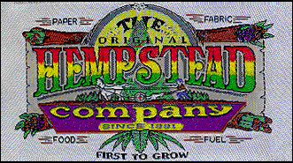

|  |
| |
Drawing on hemp fiber’s special attributes: absorbency, insulation, strength, and softness, clothing manufacturers and designers will once again put hemp into linen to produce new lines of durable and attractive clothing, rugs, and textiles of all kinds.
The arrival of imported hemp-cotton blended clothing from China in 1989 marked the beginning of a new era for the rapidly changing world of fashion. And now, in 1999, companies such as the Hempstead Company (Santa Ana, CA); CHA—Coalition for Hemp Awareness (Chandler Heights, AZ); Hemp Connection (Whitehorn, CA); Two Star Dog (Berkeley, CA); Ecolution (Fairfax, VA); and Ohio Hempery (Guysville, OH) all create beautiful and durable fashions and accessories from 100% hemp fabric imported from China, Hungary, Romania, and Poland.

embroidery courtesy of the Hempstead Company, 1534 East Edinger #7, Santa Ana, CA, 92705, 1-800-284-4367.
Outerwear, warm bed sheets, soft towels (hemp is 4x more water absorbent than cotton), diapers (even disposable ones that you don’t have to cut down trees to make), upholstery, wall coverings, natural rugs, even the world’s best soap—all these can now be designed and made from 100% hemp: generally better, cheaper, more durable, and ecologically safer.
Trade barriers and laws restricting the use of imported cannabis fibers need to be removed.
Right now textiles and apparel are the biggest share of imports into the U.S., at 59%. In 1989 textile imports accounted for 21% of the U.S. merchandise trade deficit. Foreign governments often subsidize their textile industries and do not require companies to follow environmental and health regulations.* Hardy hemp does not cause the huge range of environmental problems associated with cotton.
*The Washington Spectator, Vol. 17, No. 4, Feb. 15, 1991.
The United States imports more textiles than anything else. The government obstructs hemp textile and apparel importation. But, hemp textiles will not be fully cost competitive until hemp fiber can be grown and processed domestically, avoiding bloated federal import fees and lowering the costs of transportation.
the authorized on-line version of Jack Herer’s “The Emperor Wears No Clothes”
| previous page | Chapter 9 | next page |
|
 |
 |
 |
 |